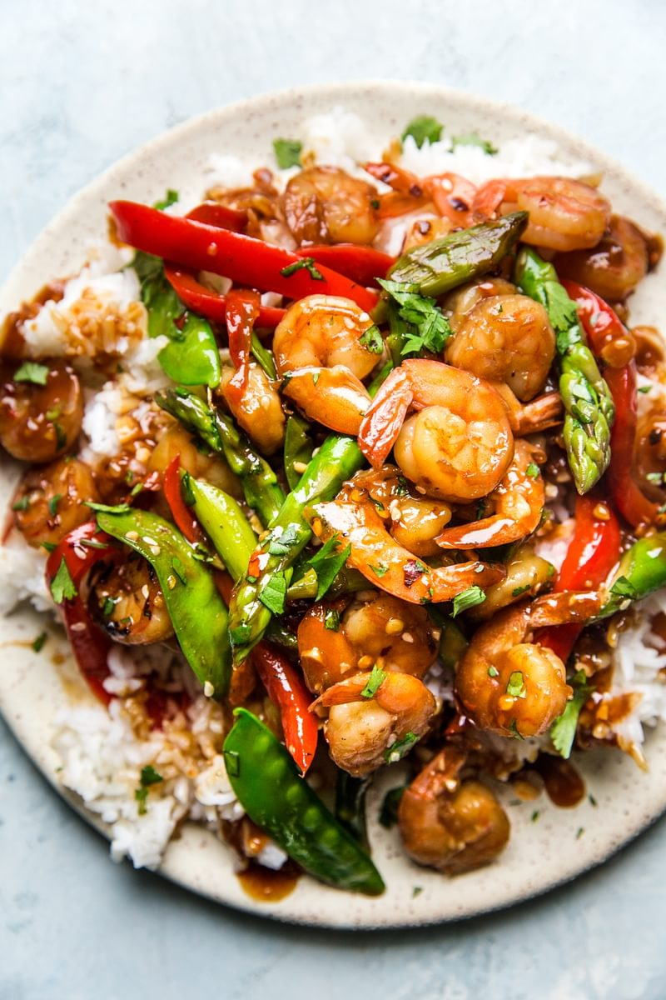

Garlic shrimp stir-fry

Stir-Fries: The OG One-Pan Dinner
Shrimp make the best stir-fries. One of the trickiest things about cooking shrimp is that they
can overcook easily, and overcooked shrimp is a real bummer. But! Cooking shrimp in a stir-fry
is a natural fit for these juicy little crustaceans. A fast fry is the easiest way to cook
them. Sautéed quickly over high heat, with a flavorful sauce and some veggies, this recipe is
all but guaranteed to produce perfect shrimp every time. It’s healthy and quick, but it’s also
a fun dish to throw together for friends—using shrimp makes it feel a little special, and it’s
easy to make it gluten-free so it accommodates a lot of dietary preferences.
Ingredients
- 6 garlic cloves, minced
- 1/4 cup low-sodium soy sauce or tamari
- 2 tablespoons light brown sugar
- 1 tablespoon toasted sesame oil
- 1 tablespoon chili sauce, such as sambal oelek
- 1 tablespoon cornstarch
- 1 tablespoon vegetable oil
- 1 red bell pepper, thinly sliced
- 1/2 pound asparagus, trimmed and cut into 2-inch pieces
- 1 cup snow peas
- 2 pounds large raw tail-on shrimp, peeled and deveined
Steps
-
In a small bowl, combine the garlic, ¼ cup of water, soy sauce, brown sugar, sesame oil,
chili sauce, and cornstarch. Whisk to combine.
-
Heat the oil in a large skillet over medium-high heat. Once the oil is glistening, add the
bell pepper, asparagus, and snow peas. Cook, stirring occasionally, until vegetables begin
to soften, 3 to 4 minutes. Add the shrimp and cook, stirring occasionally, until pink and
opaque, 3 to 4 minutes more.
-
Add the soy sauce mixture to the pan and cook, stirring occasionally, until the liquid is
slightly thickened and the shrimp and veggies are completely coated, about 5 minutes.
- Serve over cooked rice, sprinkled with cilantro and sesame seeds, if desired.